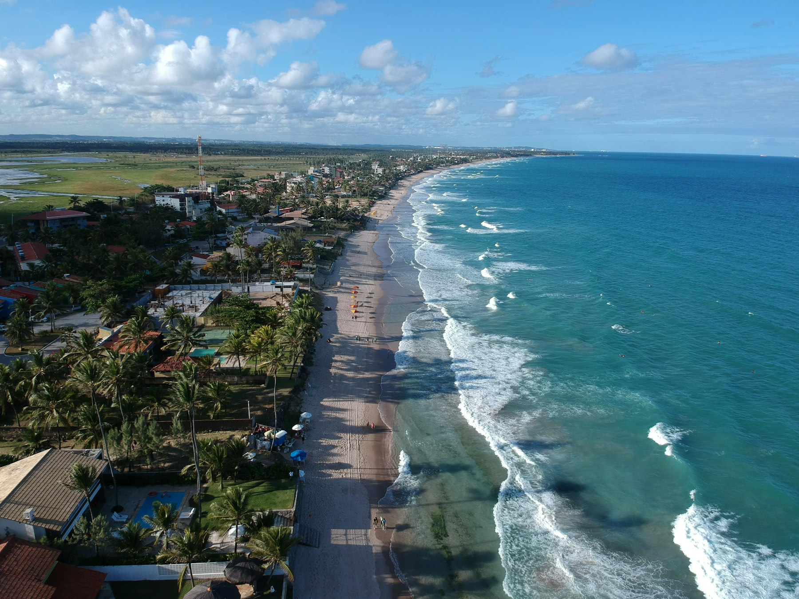
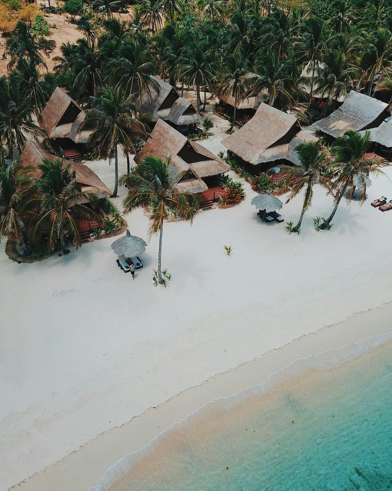
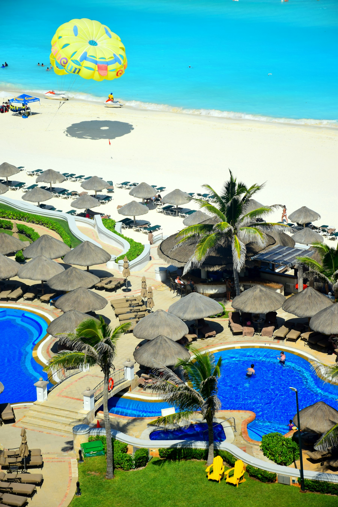
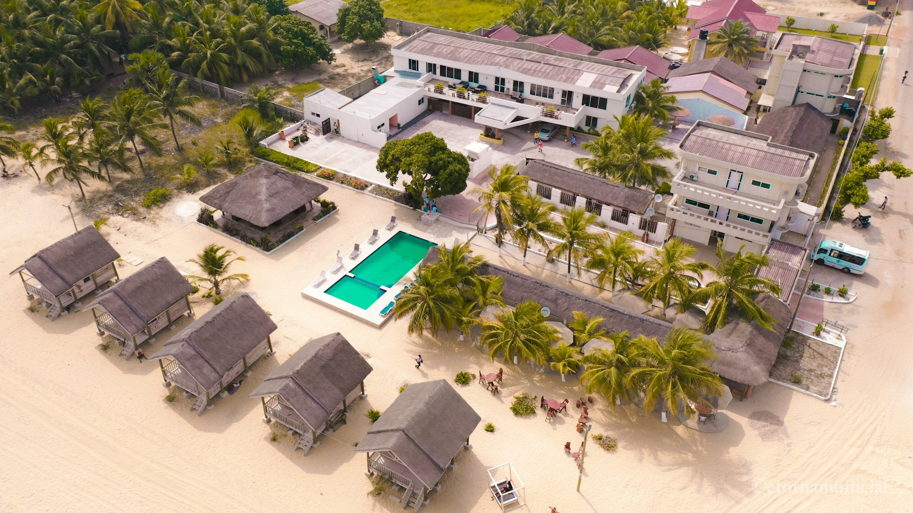
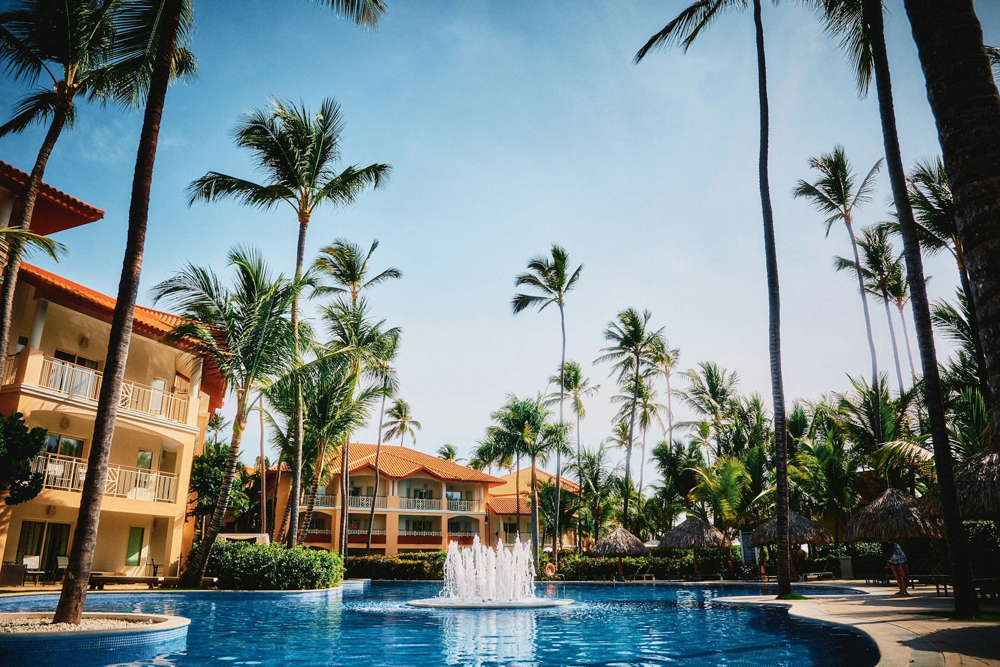

Featured · GuidesThe ultimate island-hopping guide
Practical advice and ideas from the Travellia team on the ultimate island-hopping guide.
Read article →
FoodStreet food you have to try
Practical advice and ideas from the Travellia team on street food you have to try.

TipsHow to pack light for two weeks
Practical advice and ideas from the Travellia team on how to pack light for two weeks.

CultureFestivals worth planning a trip around
Practical advice and ideas from the Travellia team on festivals worth planning a trip around.

GuidesBest time of year to visit
Practical advice and ideas from the Travellia team on best time of year to visit.

StoriesSeven days off the beaten path
Practical advice and ideas from the Travellia team on seven days off the beaten path.
No articles found
Newsletter
Stay in the loop
Travel inspiration and early-bird deals, twice a month.